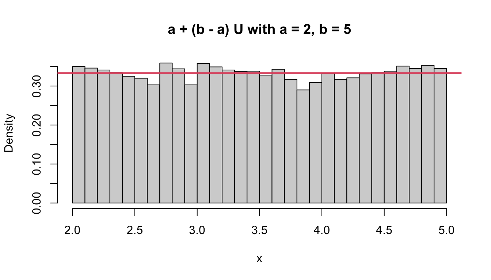
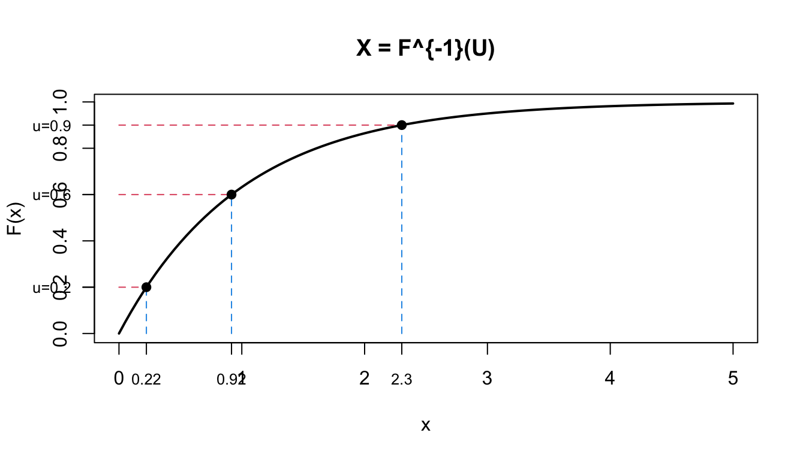
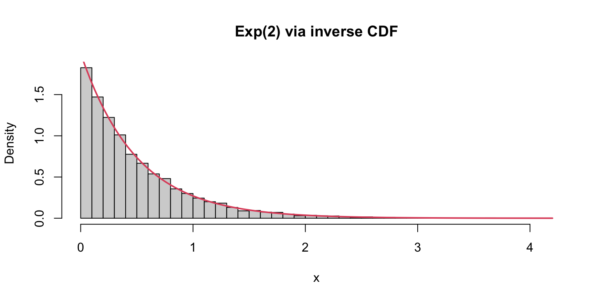
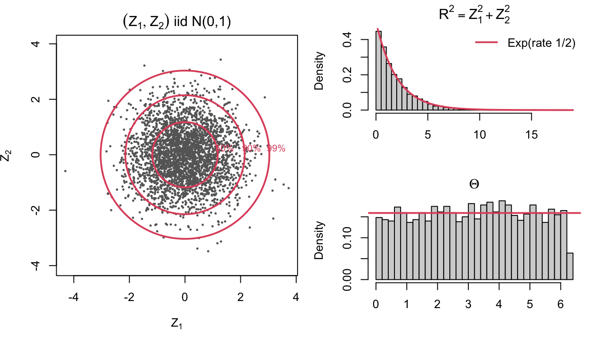
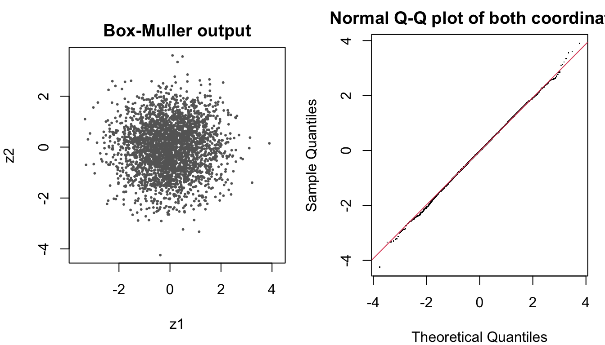
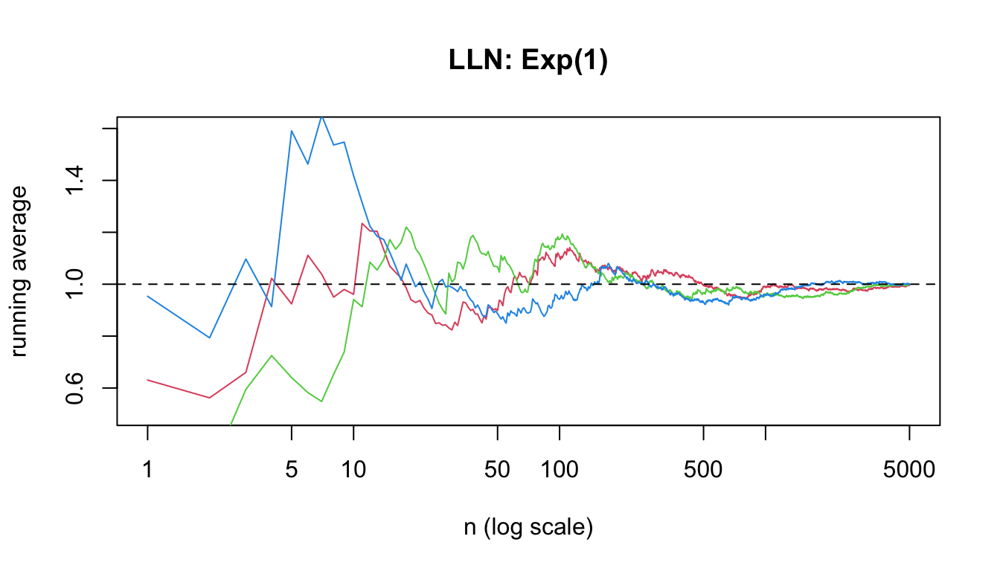
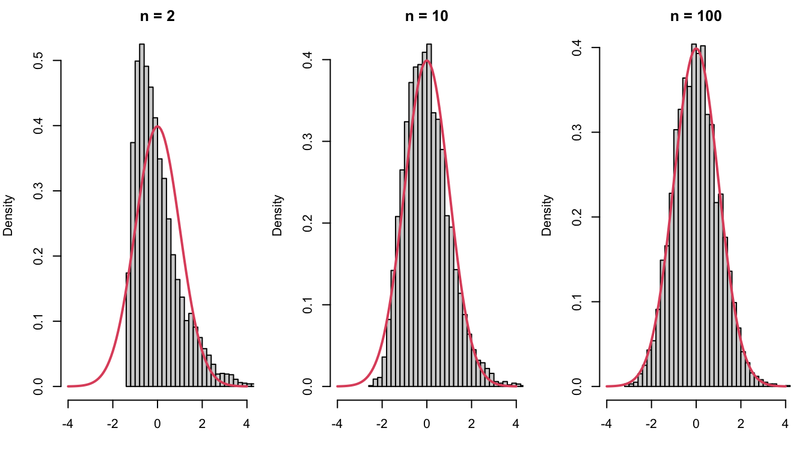
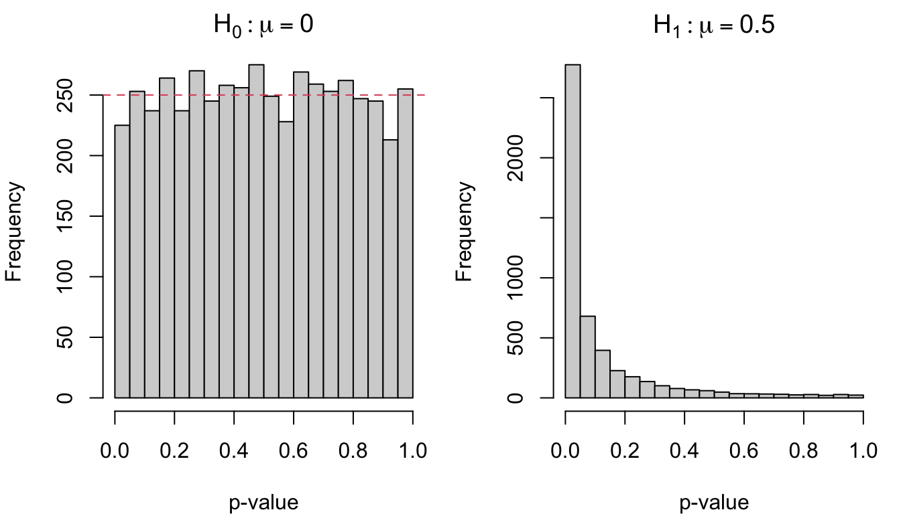
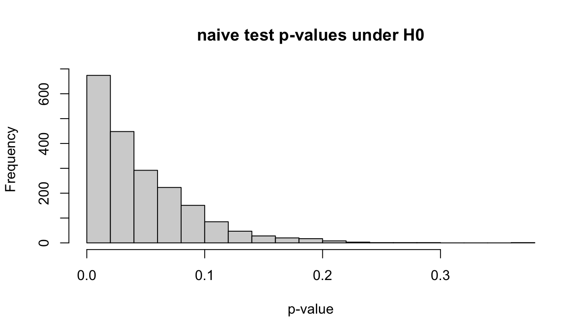

lcg <- function(n, seed, a = 1103515245, c = 12345, m = 2^31) {
x <- numeric(n); x[1] <- seed
for (i in 2:n) x[i] <- (a * x[i - 1] + c) %% m
x / m
}
round(lcg(5, seed = 812), 4)[1] 0.0000 0.2578 0.3720 0.2820 0.1523Random Numbers and Elementary Monte Carlo
A computer is deterministic, so it cannot produce truly random numbers. It produces pseudo random numbers: a deterministic sequence that behaves like iid \(\mathrm{Unif}(0,1)\) draws.
A classic generator, the linear congruential generator (LCG): \[x_{i+1} = (a\,x_i + c) \bmod m, \qquad u_{i+1} = x_{i+1}/m\]
lcg <- function(n, seed, a = 1103515245, c = 12345, m = 2^31) {
x <- numeric(n); x[1] <- seed
for (i in 2:n) x[i] <- (a * x[i - 1] + c) %% m
x / m
}
round(lcg(5, seed = 812), 4)[1] 0.0000 0.2578 0.3720 0.2820 0.1523set.seed(1); runif(3)[1] 0.2655087 0.3721239 0.5728534set.seed(1); runif(3) # identical[1] 0.2655087 0.3721239 0.5728534runif(3) # continues the sequence[1] 0.9082078 0.2016819 0.8983897Always set.seed() at the top of a simulation study so results can be reproduced and debugged.
If \(U \sim \mathrm{Unif}(0,1)\) then \(X = a + (b-a)\,U \sim \mathrm{Unif}(a,b)\): \[P(X \le x) = P\!\left(U \le \frac{x-a}{b-a}\right) = \frac{x-a}{b-a}, \qquad a \le x \le b .\]
u <- runif(10000); x <- 2 + 3 * u # Unif(2, 5)
hist(x, breaks = 30, freq = FALSE, main = "a + (b - a) U with a = 2, b = 5")
abline(h = 1/3, col = 2, lwd = 2)
Let \(F_X\) be a continuous CDF with inverse (quantile function) \(F_X^{-1}\).
Theorem. If \(U \sim \mathrm{Unif}(0,1)\), then \(X = F_X^{-1}(U)\) has CDF \(F_X\).
Proof. \[P(X \le x) = P\big(F_X^{-1}(U) \le x\big) = P\big(U \le F_X(x)\big) = F_X(x).\]
Equivalently, by the change-of-variable formula with \(u = F_X(x)\): \[f_X(x) = f_U\big(F_X(x)\big)\left|\frac{du}{dx}\right| = 1 \times f(x).\]
The converse also holds: if \(X \sim F_X\) then \(F_X(X) \sim \mathrm{Unif}(0,1)\) (the probability integral transform), which we will use for p-values.

Draw \(u\) on the vertical axis, read \(x = F^{-1}(u)\) off the horizontal axis. Regions where \(F\) is steep (high density) receive more draws.
\(X \sim \mathrm{Exp}(\lambda)\) has \(F_X(x) = 1 - e^{-\lambda x}\) for \(x > 0\). Solving \(u = 1 - e^{-\lambda x}\): \[x = F_X^{-1}(u) = -\frac{1}{\lambda}\log(1-u).\]
Since \(1 - U \sim \mathrm{Unif}(0,1)\) as well, we may use \(X = -\log(U)/\lambda\).
lambda <- 2; u <- runif(10000); x <- -log(u) / lambda
hist(x, breaks = 40, freq = FALSE, main = "Exp(2) via inverse CDF")
curve(dexp(x, lambda), add = TRUE, col = 2, lwd = 2)
c(sample_mean = mean(x), true_mean = 1 / lambda)sample_mean true_mean
0.4989619 0.5000000 For a discrete \(X\) with values \(x_1 < x_2 < \cdots\) and CDF \(F\), set \[X = x_k \quad\text{where } F(x_{k-1}) < U \le F(x_k).\]
That is, cut \((0,1)\) into intervals of lengths \(P(X = x_k)\) and see which one \(U\) lands in.
p <- c(0.2, 0.5, 0.3); vals <- c(1, 2, 3)
u <- runif(10000)
x <- vals[findInterval(u, cumsum(p)) + 1] # or sample(vals, n, TRUE, p)
table(x) / length(x)x
1 2 3
0.2007 0.5056 0.2937 \(\Phi^{-1}\) has no closed form, so the inverse-CDF method is not directly usable. Instead, look at a pair \((Z_1, Z_2) \overset{iid}{\sim} N(0,1)\) in polar coordinates: \[Z_1 = R\cos\Theta, \qquad Z_2 = R\sin\Theta, \qquad R^2 = Z_1^2 + Z_2^2, \quad \Theta = \operatorname{atan2}(Z_2, Z_1).\]
The joint density \(\frac{1}{2\pi}e^{-(z_1^2+z_2^2)/2}\) depends on \((z_1, z_2)\) only through \(r^2 = z_1^2 + z_2^2\), so it is rotationally symmetric about the origin. Consequently:
Both \(R^2\) and \(\Theta\) can be generated by inverting a CDF.

The point cloud is rotationally symmetric: the red circles enclose 50%, 90%, 99% of the points (\(R^2 \le \chi^2_2\) quantiles); the angle is uniform; \(R^2\) follows \(\mathrm{Exp}(1/2)\).
Reverse the picture: generate \(R^2\) and \(\Theta\), then rotate back to \((Z_1, Z_2)\).
Theorem (Box–Muller). If \(U_1, U_2 \overset{iid}{\sim} \mathrm{Unif}(0,1)\), then \[Z_1 = \sqrt{-2\log U_1}\,\cos(2\pi U_2), \qquad Z_2 = \sqrt{-2\log U_1}\,\sin(2\pi U_2)\] are independent \(N(0,1)\). Two uniforms produce two normals. Then \(\mu + \sigma Z \sim N(\mu, \sigma^2)\).
box_muller <- function(n) {
u1 <- runif(n); u2 <- runif(n)
r <- sqrt(-2 * log(u1)) # R^2 ~ Exp(1/2), i.e. chi-square(2)
th <- 2 * pi * u2 # Theta ~ Unif(0, 2 pi)
cbind(z1 = r * cos(th), z2 = r * sin(th))
}
z <- box_muller(3000)
par(mfrow = c(1, 2), mar = c(4, 4, 2, 1))
par(pty = "s"); plot(z, pch = 20, cex = 0.4, col = "grey40", asp = 1, main = "Box-Muller output")
par(pty = "m"); qqnorm(c(z), pch = ".", main = "Normal Q-Q plot of both coordinates"); qqline(c(z), col = 2)
c(mean = mean(z), sd = sd(z), corr = cor(z)[1, 2]) mean sd corr
-0.002155538 1.005601245 0.003130003 Monte Carlo estimates an expectation \(\mu = E(g(X))\) by an average of simulated values, \[\hat\mu_n = \frac{1}{n}\sum_{i=1}^n g(X_i), \qquad X_i \overset{iid}{\sim} f .\]
Theorem 5.1.1 (Strong Law of Large Numbers). If \(X_1, X_2, \ldots\) are iid with finite mean \(\mu\), then \[P\left(\frac{X_1 + \cdots + X_n}{n} \to \mu\right) = 1 . \tag{5.1}\]
The LLN guarantees that the average converges to the truth. It does not say how fast.
Theorem 5.1.2 (Central Limit Theorem). If in addition the variance \(\sigma^2\) is finite, then \[\frac{\bar X - \mu}{\sigma/\sqrt n} \;\xrightarrow{d}\; N(0,1). \tag{5.2}\]
The CLT gives the error bound: the Monte Carlo error is of order \(\sigma/\sqrt n\).
From (5.2), with confidence level 95%, \[P\!\left(|\bar X - \mu| \le 1.96\,\frac{\sigma}{\sqrt n}\right) \approx 0.95, \tag{5.3}\] so a 95% interval for \(\mu\) is \[\bar X \pm 1.96\,\frac{\sigma}{\sqrt n}, \qquad \sigma \text{ replaced by the sample SD } s .\]
Running averages of \(X_i \sim \mathrm{Exp}(1)\) (\(\mu = 1\)) for three independent sequences:
n <- 5000
plot(NULL, xlim = c(1, n), ylim = c(0.5, 1.6), log = "x",
xlab = "n (log scale)", ylab = "running average", main = "LLN: Exp(1)")
for (k in 1:3) lines(cumsum(rexp(n)) / (1:n), col = k + 1)
abline(h = 1, lty = 2)
For each of \(N = 5000\) repetitions, draw \(n\) values from \(\mathrm{Exp}(1)\) and standardize the mean, \((\bar X - 1)/(1/\sqrt n)\):
clt_demo <- function(n, N = 5000) replicate(N, (mean(rexp(n)) - 1) * sqrt(n))
par(mfrow = c(1, 3), mar = c(4, 4, 2, 1))
for (n in c(2, 10, 100)) {
hist(clt_demo(n), breaks = 40, freq = FALSE, xlim = c(-4, 4), main = paste("n =", n), xlab = "")
curve(dnorm, add = TRUE, col = 2, lwd = 2)
}
The skewed exponential becomes approximately normal as \(n\) grows.
Let \((X, Y)\) be uniform on the square \(S = (-1,1)\times(-1,1)\), and let \(C = \{(x,y): x^2 + y^2 \le 1\}\) be the unit disk. Then \[P\big((X,Y) \in C\big) = \frac{\text{area}(C)}{\text{area}(S)} = \frac{\pi}{4}.\]
Define \(Z = 4\, I\big((X,Y)\in C\big)\), so \(E(Z) = \pi\) and \[\mathrm{Var}(Z) = 16 \cdot \frac{\pi}{4}\left(1 - \frac{\pi}{4}\right) \approx 2.70, \qquad \mathrm{SD}(Z) \approx 1.64 .\]
Drawing \((X_i, Y_i)\) and averaging \(Z_i\): \[\hat\pi_n = \frac{1}{n}\sum_{i=1}^n Z_i = 4 \times \frac{\#\{i: X_i^2 + Y_i^2 \le 1\}}{n}. \tag{5.4}\]
n <- 2000; x <- runif(n, -1, 1); y <- runif(n, -1, 1); inside <- x^2 + y^2 <= 1
par(pty = "s")
plot(x, y, col = ifelse(inside, "steelblue", "grey60"), pch = 20, cex = 0.6,
main = sprintf("n = %d, proportion inside = %.3f, pi-hat = %.3f", n, mean(inside), 4 * mean(inside)))
curve(sqrt(1 - x^2), -1, 1, add = TRUE, lwd = 2); curve(-sqrt(1 - x^2), -1, 1, add = TRUE, lwd = 2)
est_pi <- function(n) {
z <- 4 * (runif(n, -1, 1)^2 + runif(n, -1, 1)^2 <= 1)
c(estimate = mean(z), se = sd(z) / sqrt(n))
}
r <- est_pi(10000)
r estimate se
3.12640000 0.01652724 r["estimate"] + c(-1.96, 1.96) * r["se"] # 95% interval; contains pi = 3.14159?[1] 3.094007 3.158793The standard error \(s/\sqrt n\) is computed from the same simulated values — no extra cost. Always report it with a Monte Carlo estimate.
ns <- 10^(2:6)
res <- t(sapply(ns, est_pi))
data.frame(n = ns, estimate = round(res[, 1], 5), error = round(res[, 1] - pi, 5),
se = signif(res[, 2], 3), theory_se = signif(1.64 / sqrt(ns), 3)) n estimate error se theory_se
1 1e+02 3.32000 0.17841 0.15100 0.16400
2 1e+03 3.09600 -0.04559 0.05290 0.05190
3 1e+04 3.12600 -0.01559 0.01650 0.01640
4 1e+05 3.14264 0.00105 0.00519 0.00519
5 1e+06 3.14164 0.00004 0.00164 0.00164n <- 1e5; z <- 4 * (runif(n, -1, 1)^2 + runif(n, -1, 1)^2 <= 1)
k <- 1:n; pihat <- cumsum(z) / k
plot(k, pihat, type = "l", log = "x", ylim = c(2.8, 3.5), xlab = "n (log scale)", ylab = expression(hat(pi)[n]))
lines(k, pi + 1.96 * 1.64 / sqrt(k), lty = 2, col = 2); lines(k, pi - 1.96 * 1.64 / sqrt(k), lty = 2, col = 2)
abline(h = pi, col = 4)
The red band is \(\pi \pm 1.96\,\sigma/\sqrt n\); the running estimate stays inside it most of the time.
A point estimator \(\hat\theta = \hat\theta(X_1, \ldots, X_n)\) is judged by its mean squared error \[\mathrm{MSE}(\hat\theta) = E\big[(\hat\theta - \theta)^2\big] = \mathrm{Var}(\hat\theta) + \big[\mathrm{Bias}(\hat\theta)\big]^2 .\]
MSE is an expectation, so it is estimated by Monte Carlo: simulate \(N\) independent data sets from a model with known \(\theta\), \[\hat\theta^{(j)} = \hat\theta\big(X_1^{(j)}, \ldots, X_n^{(j)}\big), \qquad j = 1, \ldots, N,\] and compute \[\widehat{\mathrm{MSE}} = \frac{1}{N}\sum_{j=1}^N \big(\hat\theta^{(j)} - \theta\big)^2, \qquad \widehat{\mathrm{Bias}} = \bar{\hat\theta} - \theta, \qquad \widehat{\mathrm{Var}} = \frac{1}{N}\sum_{j=1}^N \big(\hat\theta^{(j)} - \bar{\hat\theta}\big)^2 .\]
Two sample sizes appear: \(n\) (data per replicate, fixed by the problem) and \(N\) (replicates, chosen large enough that the Monte Carlo error is negligible).
Estimating the centre \(\theta = 0\) of a symmetric distribution, \(n = 20\), \(N = 5000\) replicates.
eval_est <- function(rdist, n = 20, N = 5000) {
est <- replicate(N, { x <- rdist(n); c(mean = mean(x), median = median(x), trim10 = mean(x, trim = 0.1)) })
rbind(bias = rowMeans(est), var = apply(est, 1, var), mse = rowMeans(est^2))
}
round(eval_est(rnorm), 4) # normal data mean median trim10
bias 0.0005 -0.0026 -0.0002
var 0.0495 0.0738 0.0526
mse 0.0495 0.0738 0.0526round(eval_est(function(n) rt(n, df = 3)), 4) # heavy-tailed t3 data mean median trim10
bias -0.0081 -0.0055 -0.0087
var 0.1428 0.0903 0.0828
mse 0.1428 0.0903 0.0828No estimator is best everywhere: the mean wins under normality, the trimmed mean and median win under heavy tails.
A test rejects \(H_0\) when a statistic \(T\) exceeds a critical value \(c_\alpha\).
| reject: \(T > c_\alpha\) | do not reject: \(T \le c_\alpha\) | |
|---|---|---|
| \(H_0\) true | Type I error (false positive) | true negative |
| \(H_1\) true | true positive | Type II error (false negative) |
\[\text{size} = P(T > c_\alpha \mid H_0) = \alpha, \qquad \text{power} = P(T > c_\alpha \mid H_1) = 1 - \beta .\]
Both are probabilities — hence expectations of indicators — so both can be estimated by Monte Carlo once we can simulate data under \(H_0\) and \(H_1\).
Simulate \(N\) data sets under \(H_0\) and compute \(T^{(1)}, \ldots, T^{(N)}\):
| replicate | \(T^{(j)}\) | \(I(T^{(j)} > c_\alpha)\) |
|---|---|---|
| 1 | \(T^{(1)}\) | 1 |
| 2 | \(T^{(2)}\) | 0 |
| \(\vdots\) | \(\vdots\) | \(\vdots\) |
| \(N\) | \(T^{(N)}\) | 0 |
\[\hat P(T > c_\alpha \mid H_0) = \frac{1}{N}\sum_{j=1}^N I\big(T^{(j)} > c_\alpha\big) \;\doteq\; \alpha\]
so take \(\hat c_\alpha\) = the \((1-\alpha)\) sample quantile of \(T^{(1)}, \ldots, T^{(N)}\). This replaces the (often unknown) null distribution of \(T\) by its empirical distribution.
The p-value is the probability, under \(H_0\), of a statistic at least as extreme as the observed one: \[pv(t) = P(T \ge t \mid H_0) = 1 - F_{H_0}(t),\] the survival function of \(T\) under \(H_0\) evaluated at \(t^{obs}\). Rejecting when \(pv(t^{obs}) < \alpha\) is the same as rejecting when \(t^{obs} > c_\alpha\).
Theorem. If \(T \mid H_0\) has continuous CDF \(F_{H_0}\), then \(pv(T) = 1 - F_{H_0}(T) \sim \mathrm{Unif}(0,1)\) under \(H_0\).
Proof. For \(t \in (0,1)\), \[ \begin{aligned} P\big(pv(T) < t\big) &= P\big(1 - F_{H_0}(T) < t\big) = P\big(F_{H_0}(T) > 1 - t\big) \\ &= P\big(T > F_{H_0}^{-1}(1-t)\big) = 1 - F_{H_0}\big(F_{H_0}^{-1}(1-t)\big) = t . \end{aligned} \]
Consequences:
One-sample \(t\)-test of \(H_0: \mu = 0\), \(n = 20\), \(N = 5000\):
pv_sim <- function(mu, n = 20, N = 5000) replicate(N, t.test(rnorm(n, mu))$p.value)
pv0 <- pv_sim(0); pv1 <- pv_sim(0.5)
par(mfrow = c(1, 2), mar = c(4, 4, 2, 1))
hist(pv0, breaks = 20, main = expression(H[0]: mu == 0), xlab = "p-value"); abline(h = 250, col = 2, lty = 2)
hist(pv1, breaks = 20, main = expression(H[1]: mu == 0.5), xlab = "p-value")
Under \(H_0\) the p-values are uniform; under \(H_1\) they pile up near 0.
\[\widehat{\text{size}} = \hat P(pv < \alpha \mid H_0) = \frac{1}{N}\sum_{j=1}^N I\big(pv^{(j)}_{H_0} < \alpha\big), \qquad \widehat{\text{power}} = \hat P(pv < \alpha \mid H_1) = \frac{1}{N}\sum_{j=1}^N I\big(pv^{(j)}_{H_1} < \alpha\big)\]
c(size = mean(pv0 < 0.05), power = mean(pv1 < 0.05),
exact_power = power.t.test(n = 20, delta = 0.5, sd = 1)$power) size power exact_power
0.0480000 0.5722000 0.3377084 Each estimate is a proportion, so its Monte Carlo standard error is \(\sqrt{\hat p(1-\hat p)/N}\) — about \(0.003\) for the size with \(N = 5000\).
When \(F_{H_0}\) is unknown, estimate \(pv(t^{obs})\) by simulating \(T\) under \(H_0\): \[\widehat{pv}(t^{obs}) = \frac{1 + \sum_{j=1}^N I\big(T^{(j)} \ge t^{obs}\big)}{N + 1}.\]
(The “+1” counts the observed statistic as one draw from \(H_0\); it keeps the estimate above 0 and the test exactly valid.)
Example: test \(H_0: \mu = 0\) for \(n = 15\) observations using \(T = |\bar X|/(s/\sqrt n)\), but suppose we did not know the \(t\)-distribution.
x <- rnorm(15, mean = 0.6); tobs <- abs(mean(x)) / (sd(x) / sqrt(15))
Tnull <- replicate(5000, { y <- rnorm(15); abs(mean(y)) / (sd(y) / sqrt(15)) })
c(mc_pv = (1 + sum(Tnull >= tobs)) / 5001, exact_pv = 2 * pt(-tobs, df = 14)) mc_pv exact_pv
0.1649670 0.1571267 Data \((X_i, Y_i)\), \(i = 1, \ldots, n\). Test \(H_0: X \perp Y\) (which implies \(\mathrm{corr}(X,Y) = 0\)) with \(T = |\hat\rho|\).
Under \(H_0\), every pairing of the \(X\) values with the \(Y\) values is equally likely, so the null distribution of \(T\) is obtained by re-computing \(T\) after randomly permuting \(Y\):
No normality assumption is needed; the null distribution is generated from the data itself.
perm_cor_test <- function(x, y, N = 2000) {
robs <- cor(x, y)
rperm <- replicate(N, cor(x, sample(y)))
list(rho = robs, pv = (1 + sum(abs(rperm) >= abs(robs))) / (N + 1), rperm = rperm)
}
x <- rexp(30); y <- 0.4 * x + rexp(30) # non-normal, dependent
out <- perm_cor_test(x, y)
hist(out$rperm, breaks = 40, main = "permutation distribution of rho", xlab = "rho")
abline(v = c(-1, 1) * abs(out$rho), col = 2, lwd = 2)
c(rho_obs = out$rho, perm_pv = out$pv, pearson_pv = cor.test(x, y)$p.value) rho_obs perm_pv pearson_pv
0.31422924 0.08195902 0.09081520 Setting. Response \(Y\) and \(p = 20\) candidate predictors \(X_1, \ldots, X_{20}\), \(n = 50\). We want to test \(H_0\): \(Y\) is unrelated to all of the \(X\)’s.
A common practice:
Question. Is this a valid test of \(H_0\)? Does it have size \(\alpha\)?
naive_test <- function(y, X) {
k <- which.max(abs(cor(X, y)))
summary(lm(y ~ X[, k]))$coefficients[2, 4] # t-test p-value of selected slope
}The \(t\)-test p-value assumes \(X_{k^*}\) was chosen in advance. Selecting the best of 20 predictors after looking at the data means that, even under \(H_0\), \(\max_k |\hat\rho_k|\) tends to be large. The reported p-value ignores this selection.
Generate data under \(H_0\) (\(Y\) independent of all \(X\)’s) and check whether the p-values are uniform:
sim_null <- function(n = 50, p = 20) list(y = rnorm(n), X = matrix(rnorm(n * p), n, p))
pv_naive <- replicate(2000, { d <- sim_null(); naive_test(d$y, d$X) })
hist(pv_naive, breaks = 20, main = "naive test p-values under H0", xlab = "p-value")
c(size_at_0.05 = mean(pv_naive < 0.05))size_at_0.05
0.6395 The true size is far above 0.05: the naive test rejects a true \(H_0\) far too often. Note that under \(H_0\) the naive p-value is not uniform, which is a general diagnostic for an invalid test.
Fix: treat the entire procedure — selection plus fitting — as the test statistic, and obtain its null distribution by permuting \(Y\).
\[T(Y, X) = \max_k |\hat\rho(X_k, Y)|\]
perm_test <- function(y, X, N = 500) {
Tstat <- function(y) max(abs(cor(X, y)))
Tobs <- Tstat(y); Tperm <- replicate(N, Tstat(sample(y)))
(1 + sum(Tperm >= Tobs)) / (N + 1)
}sim_alt <- function(n = 50, p = 20, beta = 0.5) {
X <- matrix(rnorm(n * p), n, p); list(y = beta * X[, 1] + rnorm(n), X = X)
}
pv_perm0 <- replicate(300, { d <- sim_null(); perm_test(d$y, d$X) })
pv_perm1 <- replicate(300, { d <- sim_alt(); perm_test(d$y, d$X) })
pv_naive1 <- replicate(300, { d <- sim_alt(); naive_test(d$y, d$X) })
rbind(naive = c(size = mean(pv_naive < 0.05), power = mean(pv_naive1 < 0.05)),
permutation = c(size = mean(pv_perm0 < 0.05), power = mean(pv_perm1 < 0.05))) size power
naive 0.63950000 0.9666667
permutation 0.03666667 0.6133333